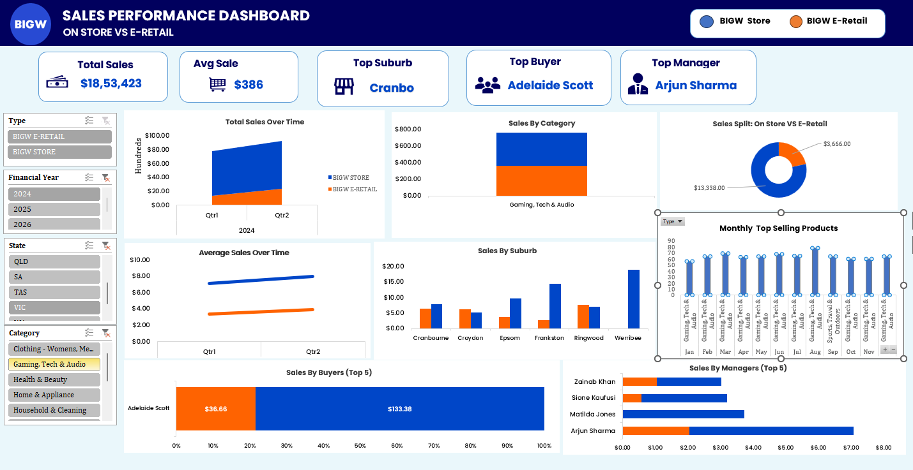

How do Store and E-Retail sales compare across states, categories and years?
03 Case study · Dashboard design
BIG W Sales Performance Store vs E-Retail Analysis
Transforming raw retail sales data into an interactive Excel dashboard to compare Store and E-Retail channel performance across states, categories, and time periods.

3 FY analysed
Store leads revenue
01 — In 30 seconds
The Short Version
Cleaned a multi-year sales dataset and built an interactive Excel dashboard with pivot tables, pivot charts, KPI cards and slicers.
Physical stores drive most revenue, Gaming, Tech & Audio is the top category, and demand follows clear seasonal peaks.
Store
Dominant Sales Channel
#1
Gaming, Tech & Audio — Top Category
Multi-State
Coverage Across All Australian States
3 FY
Financial Years Analysed (2024–2026)
02 — Visual Analysis
Dashboard Preview
Click any screenshot to view it full size.
03 — Methodology
How It Was Done
Four steps. Select one to see the detail.
01
Data Preparation
Cleaned and structured the raw sales data across states, financial years, suburbs, categories, managers and buyers.
02
Pivot Table Modelling
Aggregated sales by channel, year, state, category, buyer and manager — the backbone of the dashboard.
03
Dashboard Design
Connected pivot charts and KPI cards, with slicers that filter every visual at once.
04
Monthly Product Analysis
Found the top-selling category each month to surface seasonal demand for stock and promotion planning.
04 — Key Findings
Business Insights
Store Dominates Revenue
Physical store sales contributed the majority of total revenue, confirming the importance of in-store retail.
Gaming, Tech & Audio Leads
The highest-performing category across most months, driven by steady demand for electronics and gaming.
Clear Seasonal Demand Peaks
Monthly top-product analysis revealed peaks that can guide promotions and stock planning.